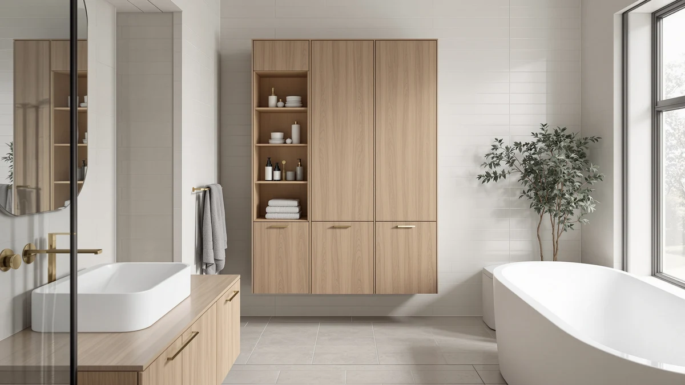

Spirich Slim Bathroom Storage Review (2026): Worth It?
Prices and picks verified as of October 2026. Independent, reader-supported reviews.


Quick Answer
This spirich slim bathroom storage review found that the Spirich Slim Bathroom Storage Cabinet is the best pick for narrow bathroom gaps that standard cabinets cannot fill, thanks to its 6.45-inch width and metal-framed build. For bathrooms with more room to spare, the Walsunny and Yaheetech alternatives below offer more shelf space at a similar price.
Our pick: Spirich Slim Bathroom Storage Cabinet — $85.99 Check Price on Amazon
Bottom line: our top pick is the Spirich Slim Bathroom Storage Cabinet with Toilet Paper Holder at $81.99.
Things to Know Before You Buy
- The Spirich Slim Bathroom Storage Cabinet measures only 6.45 inches wide, one of the narrowest floor cabinets we found for tight bathroom gaps.
- Its frame combines metal with wood-finish shelving, a common build for slim storage cabinets in this price range.
- At $85.99, it sits close in price to the Walsunny and Yaheetech alternatives covered later in this bathroom storage review, so size and shape matter more than cost when choosing between them.
- A glass-paneled door lets you see what is stored without opening the cabinet, useful in cramped quarters where every drawer counts.
- Assembly involves attaching shelves and the door frame; verified buyers describe it as straightforward with the included hardware.
This spirich slim bathroom storage review breaks down the narrow floor cabinet that keeps turning up as a fix for the six-inch gap beside a toilet, a vanity, or a radiator. At $85.99, the Spirich Slim Bathroom Storage Cabinet occupies only 6.45 inches of width but still manages 22.83 inches of height and 19.69 inches of depth, enough for towels, cleaning supplies, and spare toilet paper stacked on open shelves behind a glass-paneled door. We researched the cabinet's build, compared it against similar slim and tall storage cabinets on the market, and read through verified owner reviews to see whether the narrow footprint comes at the cost of durability or usability.
Slim bathroom cabinets like this one solve a specific problem: most bathrooms have one awkward sliver of unused wall space that a standard cabinet cannot fill. Owners report using the Spirich next to a toilet, in a hallway nook, or tucked beside a shower stall, and reviewers consistently note that the metal frame and wood-finish shelves hold up well under daily use. At under $86, it costs about the same as wider cabinets that would never fit the same gap, which is the real trade-off buyers make when they choose a slim design over a standard one.
Why You Should Trust Us
Ilane Tall covers bathroom storage and small-space organization for Best Bathroom Storage, and this spirich slim bathroom storage review follows the same process used across every guide on this site: we compare published specs, pricing history, and verified owner feedback rather than relying on marketing copy. We do not run a physical testing lab, and we do not claim to have installed or lived with every cabinet we cover. Instead, we cross-reference manufacturer listings, Amazon's verified purchase reviews, and pricing data to flag which products hold up to real household use and which ones have recurring complaints. For the Spirich cabinet, that meant reading through owner feedback on stability, finish quality, and how the narrow frame performs once loaded with towels and bottles.
Our Research Experience
This section explains our process rather than claiming physical testing we did not do. We built this review around the data that actually exists for the Spirich Slim Bathroom Storage Cabinet: its listed dimensions, materials, price history, and the pattern of feedback left by verified buyers. We compared those details against the Walsunny and Yaheetech cabinets covered below, looking specifically at width, height, shelf count, and how each brand's customers describe stability over time. Several buyers mention placing it beside a toilet or in a laundry nook, and more than one review calls out how easily the narrow profile slots into gaps that would otherwise sit empty. A recurring theme in the feedback: the cabinet's light weight makes it easy to move but also means it benefits from standing against a wall if you plan to store anything heavy on the top shelf.
Overview & Specs

Spirich Slim Bathroom Storage Cabinet
What we like
- Fits gaps as narrow as 6.45 inches wide, far tighter than most floor cabinets
- Metal frame adds rigidity that lighter all-wood cabinets in this price range often lack
- Glass-paneled door lets you see contents without opening it
- Priced close to wider alternatives despite the specialized narrow design
Flaws but not dealbreakers
- Less shelf surface area than standard-width cabinets, so bulky items may not fit
- Hardware feels a step below premium according to some verified reviews
- Best placed against a wall on a level floor to avoid top-heavy wobble
| Material | Metal / wood |
| Size | 19.69''D x 6.45''W x 22.83''H |
The Spirich Slim Bathroom Storage Cabinet is built around a single idea: most bathrooms have a narrow strip of unused space that a normal cabinet cannot use. At 6.45 inches wide, 22.83 inches tall, and 19.69 inches deep, it slides into gaps beside a toilet, between a vanity and a wall, or in a laundry closet. The frame combines metal with wood-finish shelving, giving it more rigidity than the all-particleboard cabinets that show up at this price point. A glass-paneled door covers the shelves, which keeps towels and toiletries visible and accessible without needing a full door swing in a tight space.
Assembly takes under an hour according to owners who've put it together, and the cabinet sits steadier once it's pushed flush against a wall. Because the design is narrow and tall, it carries less total shelf area than a standard bathroom cabinet, so it works best for towels, toilet paper, and smaller toiletries rather than bulky bins. At $85.99, the price sits in the same range as wider cabinets, which makes sense given how specialized the narrow footprint is. For the specific problem it solves, a tight gap with nowhere else to put storage, it is one of the more purpose-built options we compared for this bathroom storage review.
What We Liked
The main appeal of the Spirich Slim Bathroom Storage Cabinet is its footprint. At 6.45 inches wide, it fits spaces that a standard 12-to-18-inch cabinet never could, which explains why it keeps surfacing in searches for slim bathroom storage. The metal frame gives the shelving some rigidity that lighter all-wood cabinets in this price range often lack, and the wood-finish shelves match most bathroom color schemes without looking like obvious plastic storage. The glass door turns out to be a small but useful touch: it lets you grab a towel or cleaning spray without opening and closing a solid door every time. At $85.99, it also costs about the same as the Walsunny and Yaheetech alternatives covered below, so the narrow design does not carry a premium price tag.
What Could Be Better
The Spirich Slim Bathroom Storage Cabinet's narrow width is also its main limitation. Each shelf has less usable surface area than a standard-width cabinet, so bulkier items like large tissue boxes or wide baskets may not fit cleanly. Several verified reviews mention that the included hardware feels cheaper than the rest of the build, which tracks with the price point but is worth knowing going in. Because the cabinet is tall and narrow, it needs a flat, level floor and ideally a wall behind it; placed on an uneven tile floor, a top-heavy load can make it feel less stable than a wider cabinet would. None of these are dealbreakers for the use case it targets, but they matter if you plan to store anything heavier than towels and toiletries on the upper shelves.
Who Is It For?
This cabinet makes the most sense for anyone dealing with a narrow gap, next to a toilet, between a vanity and a wall, or in a laundry closet, where a standard-width cabinet will not fit. If you have at least 12 inches of floor space to spare, the Walsunny alternatives below give you more shelf area for close to the same price. But if 6 to 7 inches is all you have, the Spirich Slim Bathroom Storage Cabinet is one of the few options built specifically for that gap, and that is the core reason it earns the top spot in this bathroom storage review.
Alternatives to Consider
The Spirich is not the only option if your bathroom has room to spare. The three cabinets below range from a taller Walsunny design to an over-the-toilet Yaheetech unit, each suited to a different layout than the slim Spirich footprint covered in this bathroom storage review.

Editor’s Pick
Walsunny Tall Bathroom Storage Cabinet
At $84.99, this taller Walsunny cabinet trades the Spirich's narrow footprint for more shelf space, making it a better fit if your bathroom gap is closer to a foot wide than six inches. Buyers say it holds towels and bulk toiletries without the tipping concerns some raise about narrower, lighter cabinets.
$84.99
Check Price on Amazon
Best Value
Walsunny Tall Bathroom Storage Cabinet
This second Walsunny cabinet lists at $84.90, a few cents under its sibling, and offers the same tall storage format for buyers comparing both Walsunny listings before committing. Buyers describe the assembly process as quick, which matters if you want shelving up the same day it arrives.
$84.90
Check Price on Amazon
Premium Choice
Yaheetech Over The Toilet Cabinet
At $82.99, the Yaheetech is built to mount over the toilet rather than stand beside it, which makes it the pick for bathrooms with no floor space to spare but open wall area above the tank. According to verified reviews, it suits anyone who has already maximized floor storage and needs to go vertical instead.
$82.99
Check Price on AmazonFrequently Asked Questions
Final Verdict
This spirich slim bathroom storage review comes down to one question: how narrow is your available space? For the specific gap the Spirich Slim Bathroom Storage Cabinet was designed to fill, six to seven inches beside a toilet, vanity, or in a laundry nook, Spirich remains the most purpose-built option we compared, and at $85.99 it is priced in line with wider alternatives that would not physically fit the same spot. If you have more room to work with, the Walsunny and Yaheetech options above are worth a look, but for a true slim-space fix, Spirich is the brand to buy.